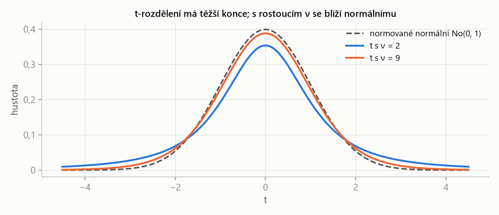
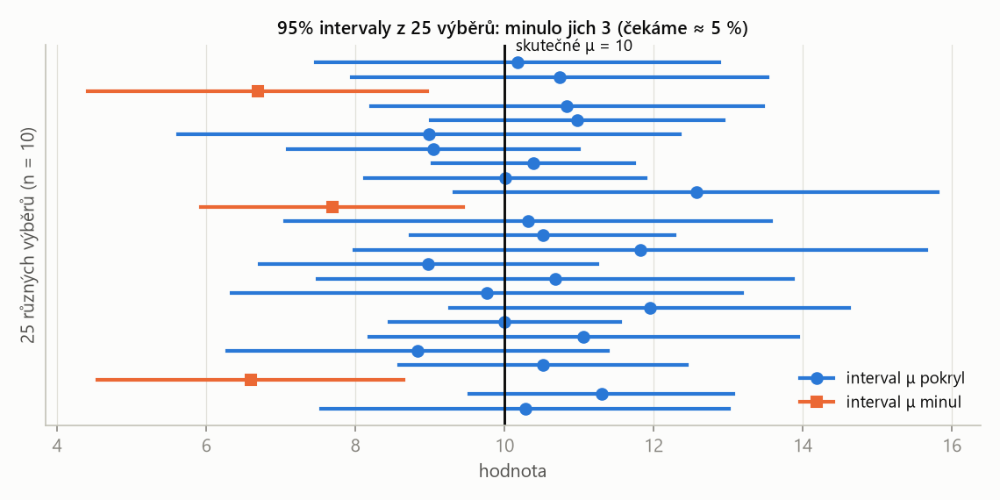
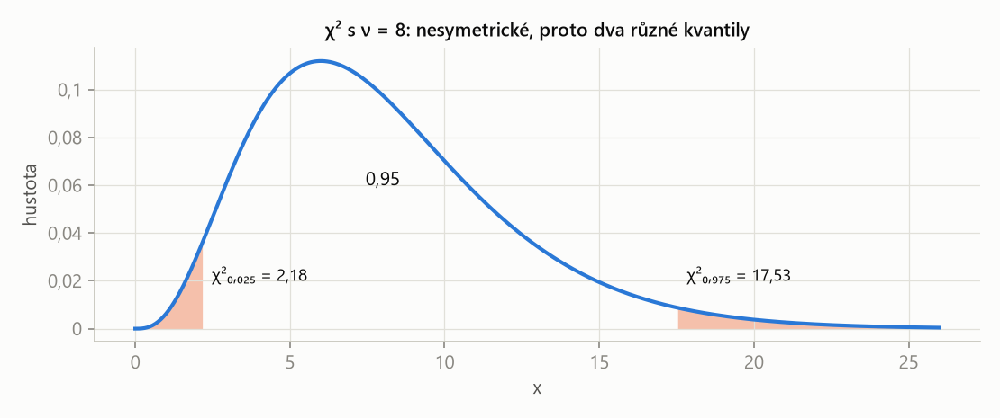

PSO – příprava na zkoušku · Odhady a intervaly spolehlivosti – PSO · https://balnerm.github.io/pripravy/pso/09_odhady.html
Kapitola 9
Odhady a intervaly spolehlivosti
Teď se směr obrací: rozdělení neznáme a máme jen naměřená data. Ze vzorku odhadneme neznámé parametry (střední hodnotu μ, rozptyl σ²) a k odhadu přidáme interval spolehlivosti – rozmezí, ve kterém parametr leží s předem zvolenou spolehlivostí. Tak se řeší úlohy S7/1 a S7/2; stejné nástroje použijeme v kapitole 10 pro testy.
Základní soubor, výběr a výběrové charakteristiky
Náhodný výběr rozsahu \(n\) z rozdělení veličiny X je n nezávislých veličin \(X_1, \dots, X_n\), z nichž každá má stejné rozdělení jako X. Jeho konkrétní hodnoty \(x_1, \dots, x_n\) jsou realizace (naměřená data).
X popisuje celý základní soubor (všechna možná měření), výběr je pár kusů, které jsme opravdu změřili. Z nich chceme usuzovat na celek.
Výběrový průměr a výběrový rozptyl jsou
\[ \bar{x} = \frac{1}{n}\sum_{i=1}^{n} x_i, \qquad s^2 = \frac{1}{n - 1}\sum_{i=1}^{n} (x_i - \bar{x})^2; \]výběrová směrodatná odchylka je \(s = \sqrt{s^2}\).
průměr dat a „průměrný čtverec odchylky od průměru“. Dělí se \(n - 1\), ne \(n\): odchylky se měří od \(\bar{x}\), které je spočítané ze stejných dat, a proto vycházejí systematicky trochu menší. Dělení \(n - 1\) to vyrovná.
Bodový odhad parametru θ je číslo spočítané z výběru, které θ nahrazuje. Odhad \(T_n\) je nestranný, je-li \(E(T_n) = \theta\), a konzistentní, jestliže s rostoucím n konverguje k θ (\(\lim p(|T_n - \theta| < \varepsilon) = 1\)).
nestranný = „v průměru se netrefuje vedle“, konzistentní = „s více daty je přesnější“. \(\bar{x}\) je nestranný a konzistentní odhad μ, \(s^2\) (s dělením n − 1) je nestranný a konzistentní odhad σ².
Počet stupňů volnosti ν odhadu je počet nezávislých údajů, ze kterých se odhad počítá; u výběrového rozptylu je \(\nu = n - 1\).
když je průměr pevný, stačí znát \(n - 1\) odchylek – poslední je dopočítaná (součet odchylek od průměru je 0). Jeden „stupeň volnosti“ jsme spotřebovali na odhad μ.
| \(\sigma/\sqrt{n}\) | směrodatná chyba průměru – průměr kolísá \(\sqrt{n}\)-krát méně než jedno měření |
| \(\chi^2(\nu)\) | rozdělení chí-kvadrát s ν stupni volnosti (pro rozptyl) |
| \(t(\nu)\) | Studentovo t-rozdělení s ν stupni volnosti (pro průměr, když σ neznáme) |
Studentovo t-rozdělení s ν stupni volnosti je rozdělení veličiny \(T = U/\sqrt{V/\nu}\), kde U ~ No(0, 1) a V ~ χ²(ν) jsou nezávislé. Je symetrické kolem 0 a pro \(\nu \to \infty\) se blíží No(0, 1).
„normované rozdělení s nejistotou navíc“: když σ neznáme a nahradíme ho odhadem s, je výsledek rozptýlenější než No(0, 1) – má těžší konce. Čím víc dat, tím lepší odhad s a tím blíž k normálnímu.

Těžší konce znamenají větší kvantily: místo 1,96 je pro 95 % a ν = 9 kvantil 2,262. Interval spolehlivosti je proto při malém vzorku širší – platíme za to, že σ neznáme.
Rozdělení χ² s ν stupni volnosti je rozdělení součtu čtverců ν nezávislých veličin s rozdělením No(0, 1): \(\chi^2 = U_1^2 + \dots + U_\nu^2\). Nabývá jen kladných hodnot, \(E\chi^2 = \nu\), a není symetrické.
rozdělení „součtu čtverců odchylek“, a proto i výběrového rozptylu. Kvůli nesymetrii má interval pro σ² dva různé kvantily.
Interval spolehlivosti
Interval spolehlivosti pro parametr θ se spolehlivostí \(1 - \alpha\) je interval \((T_1, T_2)\) s mezemi spočítanými z výběru takový, že
\[ p(T_1 < \theta < T_2) = 1 - \alpha. \]postup, který ze vzorku vyrobí interval; při mnoha opakováních pokryje skutečnou hodnotu parametru v \((1-\alpha) \cdot 100\) % případů. α (obvykle 0,05) je riziko, že interval parametr mine.

Náhodný je interval, ne μ. Každý výběr dá jiný interval; zhruba 95 % z nich μ pokryje a asi 5 % ho mine. „Spolehlivost 95 %“ je vlastnost postupu, ne jednoho konkrétního intervalu.
| \(\bar{x}\), \(s\) | výběrový průměr a výběrová směrodatná odchylka (s dělením n − 1) |
| \(t_{1-\alpha/2}(n-1)\) | kvantil t-rozdělení s \(n - 1\) stupni volnosti; pro 95 % je to \(t_{0{,}975}\) (v tabulkách skript sloupec „α = 0,05 oboustranně“) |
| \(s/\sqrt{n}\) | odhad směrodatné chyby průměru |
| \(\Delta\) | polovina šířky intervalu |
Je-li σ známé, použije se místo t kvantil normálního rozdělení: \(\bar{x} \pm u_{1-\alpha/2}\,\sigma/\sqrt{n}\).
| \((n-1)s^2\) | součet čtverců odchylek \(\sum (x_i - \bar{x})^2\) |
| \(\chi^2_{1-\alpha/2}\) | větší kvantil – patří do dolní meze (dělením větším číslem vyjde menší) |
| \(\chi^2_{\alpha/2}\) | menší kvantil – patří do horní meze |
Interval pro σ dostaneme odmocněním obou mezí.
Poznáš to: confidence interval, interval estimate, with confidence 0.95, two-sided 95 %; data a neznámé μ, σ.
- Spočítej \(n\), \(\bar{x}\), \(s^2\) (dělit \(n - 1\)!).
- Urči α (spolehlivost 0,95 → α = 0,05) a stupně volnosti \(\nu = n - 1\).
- Pro μ: kvantil \(t_{1-\alpha/2}(\nu)\), polovina šířky \(t \cdot s/\sqrt{n}\), interval \(\bar{x} \pm\) polovina.
- Pro σ²: dva kvantily \(\chi^2_{\alpha/2}(\nu)\), \(\chi^2_{1-\alpha/2}(\nu)\), dosadit do vzorce (větší kvantil dole).
- Kontrola: \(\bar{x}\) je přesně uprostřed intervalu pro μ; \(s^2\) leží uvnitř intervalu pro σ².
X ~ No(μ, σ), μ i σ neznáme. Realizace: 25, 17, −5, −4, 10, 22, 11, 2, 5, 12. Urči 95% oboustranný interval spolehlivosti pro μ.
Řešení krok po kroku
1. Průměr (n = 10, součet 95):
\[ \bar{x} = \frac{95}{10} = 9{,}5 \]2. Součet čtverců odchylek a výběrový rozptyl:
\[ \sum (x_i - \bar{x})^2 = 930{,}5 \] \[ s^2 = \frac{930{,}5}{9} \approx 103{,}39, \qquad s \approx 10{,}168 \]3. Kvantil pro ν = 9: \(t_{0{,}975}(9) = 2{,}262\). Polovina šířky:
\[ t \cdot \frac{s}{\sqrt{n}} = 2{,}262 \cdot \frac{10{,}168}{\sqrt{10}} \approx 7{,}27 \]4. Interval:
\[ \mu \in (9{,}5 - 7{,}27;\ 9{,}5 + 7{,}27) = (2{,}23;\ 16{,}77) \]Devět měření fyzikální konstanty: 1,04; 1,03; 1,06; 1,04; 1,01; 1,03; 1,03; 1,04; 1,05. Měření jsou nezávislá s rozdělením No(μ, σ), μ i σ neznámé. Sestroj 95% interval spolehlivosti pro μ a pro rozptyl σ².
Řešení krok po kroku
1. Trik pro pohodlné počítání: \(y_i = 100(x_i - 1)\) dá 4, 3, 6, 4, 1, 3, 3, 4, 5. Součet 33, součet čtverců 137:
\[ \begin{aligned} \bar{y} &= \frac{33}{9} \approx 3{,}667 \\ \sum (y_i - \bar{y})^2 &= 137 - \frac{33^2}{9} = 16 \end{aligned} \]2. Zpět k x (posun nic nemění, faktor 100 se u čtverců projeví jako \(100^2\)):
\[ \begin{aligned} \bar{x} &= 1 + \frac{3{,}667}{100} \approx 1{,}0367 \\ \sum (x_i - \bar{x})^2 &= \frac{16}{10\,000} = 0{,}0016 \end{aligned} \] \[ s^2 = \frac{0{,}0016}{8} = 0{,}0002, \qquad s \approx 0{,}01414 \]3. Interval pro μ, \(t_{0{,}975}(8) = 2{,}306\):
\[ 2{,}306 \cdot \frac{0{,}01414}{3} \approx 0{,}0109 \] \[ \begin{aligned} \mu &\in (1{,}0367 - 0{,}0109;\ 1{,}0367 + 0{,}0109) \\ &\approx (1{,}026;\ 1{,}048) \end{aligned} \]4. Interval pro σ², kvantily \(\chi^2_{0{,}975}(8) = 17{,}53\), \(\chi^2_{0{,}025}(8) = 2{,}18\):
\[ \begin{aligned} \sigma^2 &\in \left(\frac{0{,}0016}{17{,}53};\ \frac{0{,}0016}{2{,}18}\right) \\ &\approx (0{,}000091;\ 0{,}00073) \end{aligned} \]Odhad \(s^2 = 0{,}0002\) leží uvnitř, ale ne uprostřed – interval pro rozptyl je nesymetrický.

χ² není symetrické: dolní kvantil 2,18 je blízko nuly, horní 17,53 daleko. Proto se oba hledají zvlášť a interval pro σ² není „odhad ± něco“.
- Výběrový rozptyl dělit \(n - 1\), ne \(n\) (na kalkulačce \(s\), resp. \(\sigma_{n-1}\)).
- Stupně volnosti \(n - 1\), ne \(n\).
- Oboustranný 95% interval → kvantil 0,975 (na každý konec 2,5 %).
- U σ² patří větší kvantil χ² do jmenovatele dolní meze.
„Z výběru odhaduji μ výběrovým průměrem a σ² výběrovým rozptylem s dělením n − 1; oba odhady jsou nestranné a konzistentní. Interval spolehlivosti je interval spočítaný z dat, který skutečnou hodnotu parametru pokryje s pravděpodobností 1 − α. Pro μ s neznámým σ využívám, že \((\bar{X} - \mu)\sqrt{n}/s\) má t-rozdělení s n − 1 stupni volnosti, interval je \(\bar{x} \pm t_{1-\alpha/2}\, s/\sqrt{n}\). Pro σ² využívám, že \((n-1)s^2/\sigma^2\) má rozdělení χ²(n − 1).“
Interval pro μ = průměr ± t-kvantil · s/√n; interval pro σ² = součet čtverců děleno dvěma kvantily χ².
| česky | anglicky |
|---|---|
| základní soubor | population |
| náhodný výběr, rozsah výběru | random sample, sample size |
| realizace (naměřené hodnoty) | realizations, observed values |
| výběrový průměr / rozptyl | sample mean / sample variance |
| bodový odhad | point estimate |
| nestranný / konzistentní odhad | unbiased / consistent estimate |
| stupně volnosti | degrees of freedom |
| interval spolehlivosti | confidence interval, interval estimate |
| spolehlivost | confidence (level) |
| Studentovo t-rozdělení | Student t-distribution |
| rozdělení chí-kvadrát | chi-squared distribution |
| směrodatná chyba | standard error |
Fráze ze zadání: we got realizations of X = naměřili jsme hodnoty X; determine a 95 % two-sided confidence interval for the parameter μ = urči 95% oboustranný interval spolehlivosti pro μ; construct an interval estimate for the variance with confidence 0.95 = sestroj intervalový odhad rozptylu se spolehlivostí 0,95.
Shrnutí
Statistika usuzuje z výběru na základní soubor. Bodovými odhady jsou výběrový průměr (pro μ) a výběrový rozptyl s dělením n − 1 (pro σ²); oba jsou nestranné a konzistentní. Protože bodový odhad nikdy není přesný, doplňujeme ho intervalem spolehlivosti, který skutečnou hodnotu pokryje s pravděpodobností 1 − α. Pro střední hodnotu s neznámým σ se používá t-rozdělení s n − 1 stupni volnosti, které má kvůli nejistotě v odhadu s těžší konce než normální. Pro rozptyl se používá nesymetrické rozdělení χ²(n − 1) se dvěma různými kvantily.
Take-home messages
- \(\bar{x}\) odhaduje μ, \(s^2 = \sum(x_i - \bar{x})^2/(n-1)\) odhaduje σ².
- Interval pro μ (σ neznámé): \(\bar{x} \pm t_{1-\alpha/2}(n-1)\,s/\sqrt{n}\).
- Interval pro σ²: \((n-1)s^2\) děleno \(\chi^2_{1-\alpha/2}\) (dolní mez) a \(\chi^2_{\alpha/2}\) (horní mez).
- 95 % oboustranně → kvantily 0,975 a 0,025; stupně volnosti n − 1.
- Spolehlivost je vlastnost postupu: náhodný je interval, ne parametr.
Otázky ke zkoušce
Proč se ve výběrovém rozptylu dělí n − 1, a ne n?
Odchylky se měří od výběrového průměru, který je spočítaný ze stejných dat a leží „uprostřed“ nich, takže součet čtverců odchylek je systematicky menší než od skutečného μ. Dělení n − 1 to vyrovná a odhad je nestranný: \(E(s^2) = \sigma^2\). n − 1 je zároveň počet stupňů volnosti.
Co znamená, že je odhad nestranný a konzistentní?
Nestranný: jeho střední hodnota je rovna odhadovanému parametru, v průměru se netrefuje vedle. Konzistentní: s rostoucím rozsahem výběru se odhad k parametru blíží (pravděpodobnost libovolně malé odchylky jde k 1).
Co je interval spolehlivosti a jak ho interpretujete?
Interval s mezemi spočítanými z výběru, který skutečnou hodnotu parametru pokryje s pravděpodobností 1 − α. Interpretace: kdybych výběr opakoval mnohokrát, asi (1 − α)·100 % takto sestrojených intervalů by parametr obsahovalo. Náhodné jsou meze, parametr je pevný.
Proč se u intervalu pro μ s neznámým σ používá t-rozdělení?
Při známém σ má \((\bar{X} - \mu)\sqrt{n}/\sigma\) rozdělení No(0, 1). Neznámé σ nahradíme odhadem s, který sám kolísá, a veličina \((\bar{X} - \mu)\sqrt{n}/s\) má pak Studentovo t-rozdělení s n − 1 stupni volnosti. To má těžší konce, takže interval vyjde širší.
Jak se změní šířka intervalu pro μ, když zvětšíme rozsah výběru nebo spolehlivost?
Větší n interval zúží (dělí se \(\sqrt{n}\) a kvantil t klesá). Vyšší spolehlivost (např. 99 % místo 95 %) ho rozšíří, protože potřebuji větší kvantil. Přesnost a jistota jdou proti sobě; pomůže jen víc dat.
Jak sestrojíte interval spolehlivosti pro rozptyl a proč není symetrický?
Z toho, že \((n-1)s^2/\sigma^2\) má rozdělení χ²(n − 1): \(\sigma^2 \in ((n-1)s^2/\chi^2_{1-\alpha/2},\ (n-1)s^2/\chi^2_{\alpha/2})\). Rozdělení χ² je nesymetrické (jen kladné hodnoty, dlouhý pravý konec), proto jsou oba kvantily různě daleko a s² neleží uprostřed intervalu.